| 日付 | 2026年10月10日（土） - 2026年10月12日（月） | ||||||
|---|---|---|---|---|---|---|---|
| 山域 | 両白山地 | ||||||
| メンバー | 家族（妻） | ||||||
| 山行形態 | 前夜泊2泊3日車中泊 | ||||||
| アクセス | 車 | ||||||
| ルート (Map2) |
|
2日目
本日は白山登山。混雑を避けて別当出合ではなく平瀬道を登る予定。
別当出合のバスの一便が5時なので、それより早い未明に出発する。標高1240m。
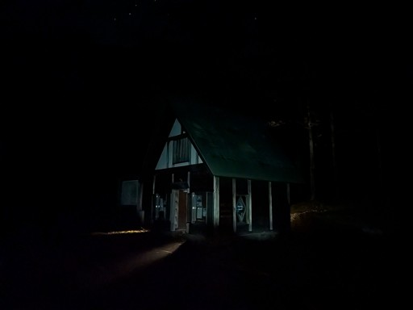
登山道入口を探してウロウロ。標識の木が落っこちているがここだろうか？
この道はしばらく閉鎖されていて、10/8に開通したばかりだ。
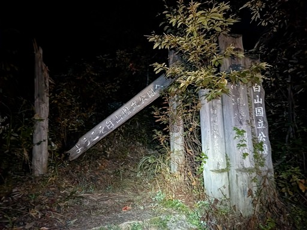
一時間程度歩くと空が明るくなってくる。
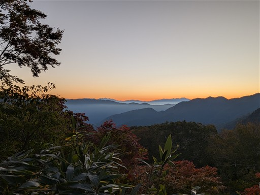
ツタが鮮やかに紅葉している。
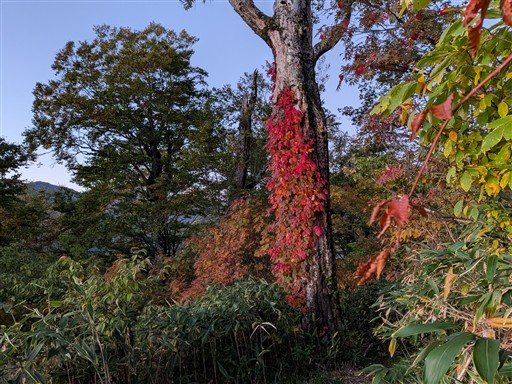
日の出の時間。周囲の山が高いので日の出の時間は遅く、もう6時だ。
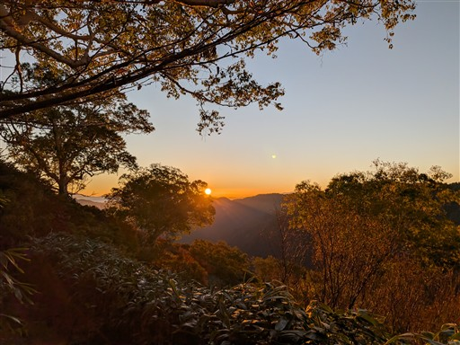
周囲の景色が赤く輝きだす。
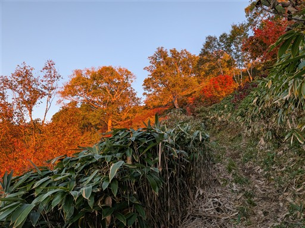
少し展望の広がるスポットに到着。朝日を浴びた山々が美しい。
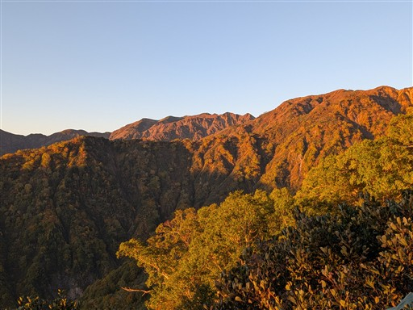
ちょっとした鎖場を通過。
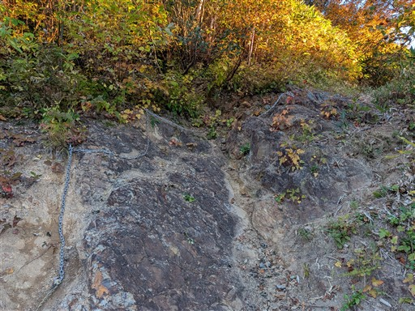
日がどんどん上がっていく。今日も北アルプスがきれいに見えている。
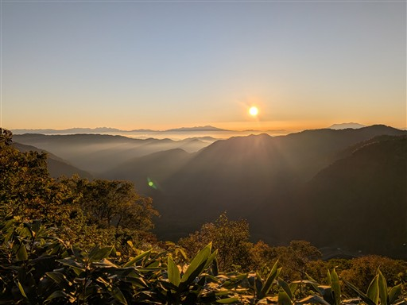
大きな瘤を持った立派なダケカンバ。
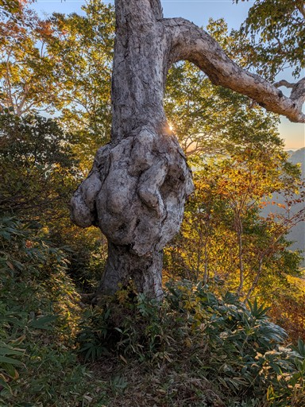
標識は所々に設置されている。道の整備状況は非常に良い。
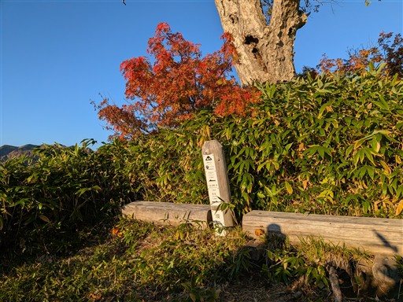
笹原広がる登山道を延々と登っていく。
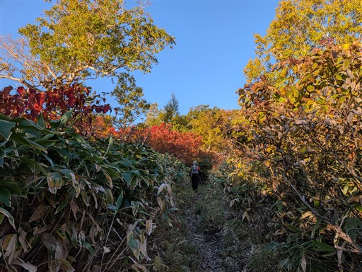
突然視界が開けて白山がの山頂部が目の前に現れる。
一気にテンションが上がる。
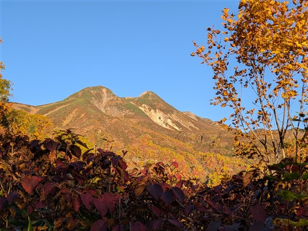
下に広がる平地はテントでも張りたくなるような美しい場所だ。
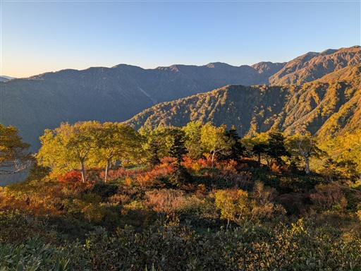
周囲はダケカンバが多い。まさに黄葉のシーズン。
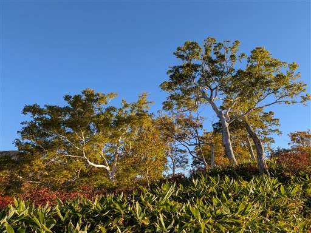
大倉山避難小屋に到着。きれいな小屋だがトイレがないのが残念。
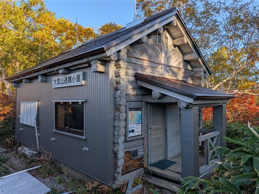
ナナカマドの紅葉。
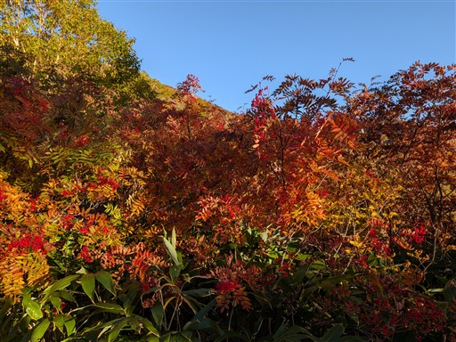
遠くに見える三角形の山は恵那山のようだ。
どっしりした山という印象だったが、こちらから見ると意外にシャープな山容だ。
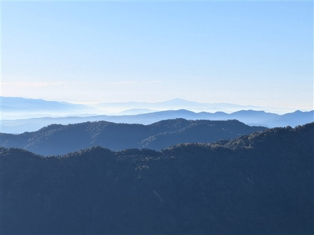
枯れた葉の裏が白くて、斜面が白く染まっている。
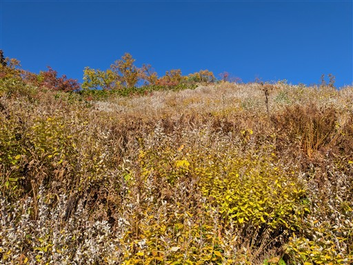
鮮やかな紅葉。標高が上がって周囲は灌木林になってくる。
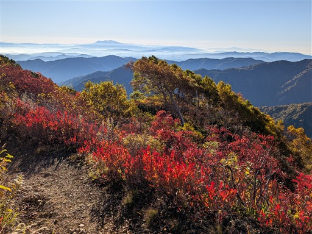
眼下の斜面も色とりどりだ。
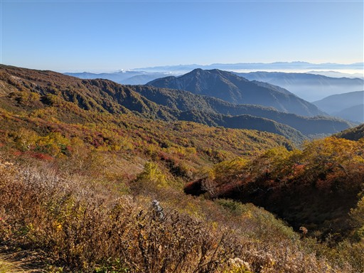
歩いてきた尾根を見下ろす。
その向こう側には幾重にも山が折り重なっていて、一番奥に北アが見えている。
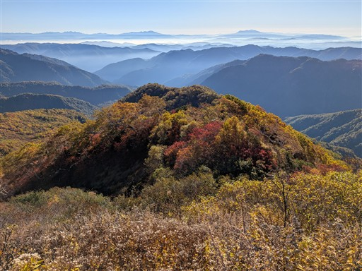
尾根道が崩落していて、隣にがっしりした新しい道がつけられている。
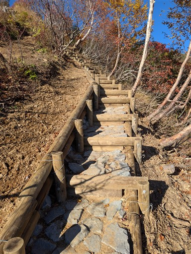
山頂がだいぶ近づいてきた。もうここはハイマツが広がる高山帯だ。
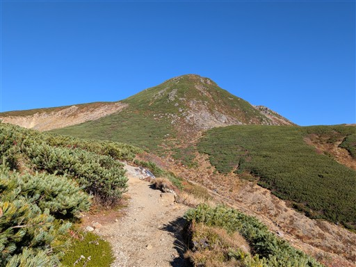
クロマメノキのちょっと渋い紅葉。近くから見ると実がたくさん付いている。
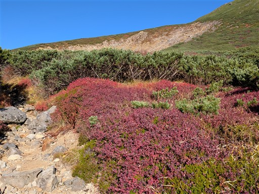
目の前に聳えるのは別山。風格ある姿であちらにも行きたくなる。
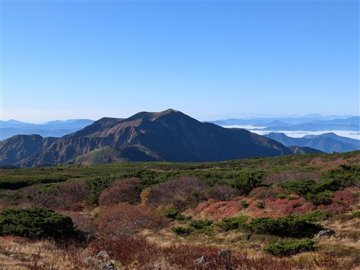
紅葉広がる絶景ロード。
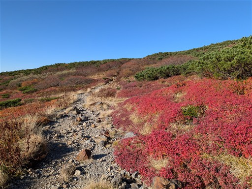
折り重なる山々の間には雲海が広がっている。
山と山の間にある町からは白山が見えていないのだろう。
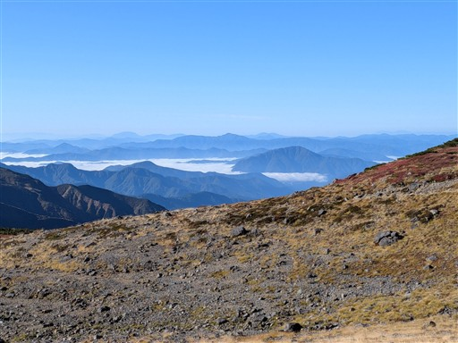
室堂に到着。
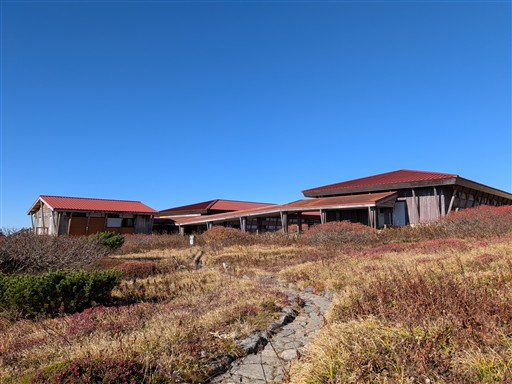
神社には帰りに寄るとして、そのまま白山山頂を目指す。
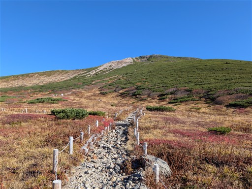
巨大な神社と小屋。まるで下界にある建物のような大きさだ。
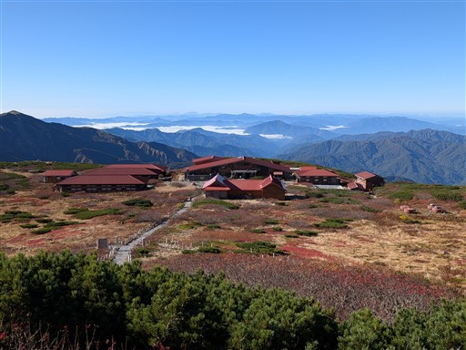
石畳の完璧に整備された道。
どこからやってきたのか、小屋泊まりか、意外に人通りが多い。
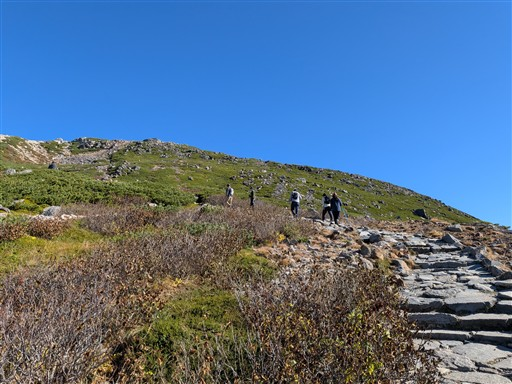
ハイマツ広がる登山道。
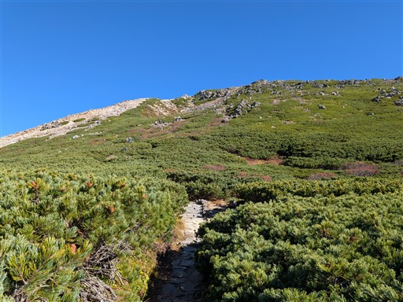
室堂はとにかく広い。山の斜面によくこれだけ広い場所があったものだと感心する。
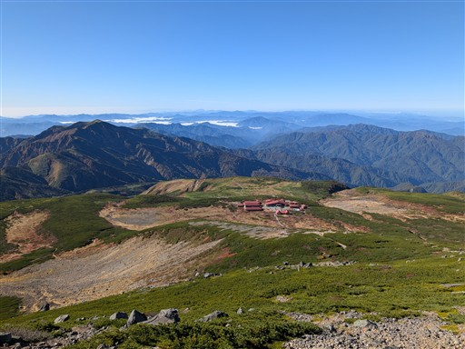
山頂に建つ白山比咩神社奥宮にお参り。
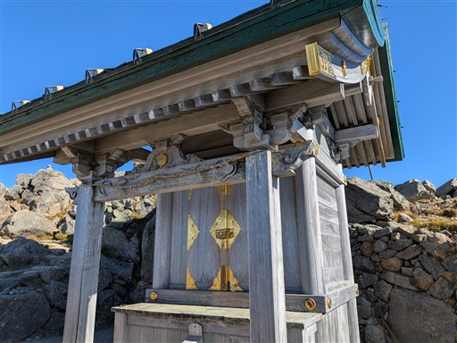
そしてここが山頂標識。白山最高峰の御前峰に到着。標高2702m。
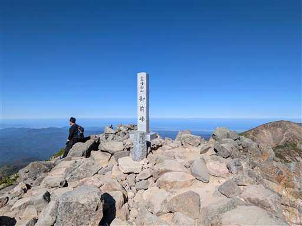
雲一つない快晴の山頂。
ここまで登ると複雑な形状の白山の山頂部がよく分かる。
左が大汝峰、右が剣ヶ峰。その間には池があり、御嶽山や乗鞍岳と似た山容だ。
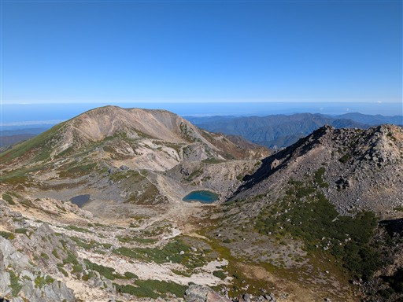
北側には日本海が広がっている。
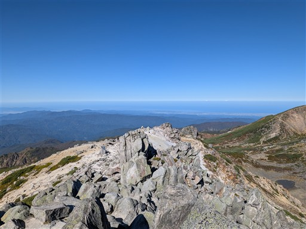
横一列に並ぶ北アルプス。その手前は広大な雲海。飛騨高山の辺りだ。
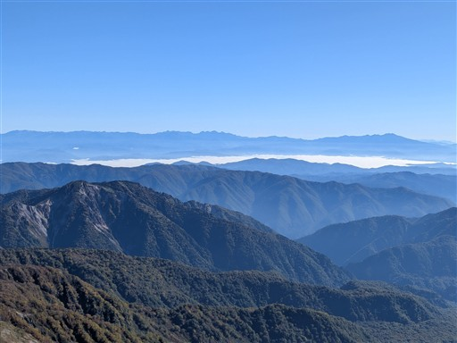
両白山地の山々。荒島岳、経ヶ岳は予想が当たった。
調べると、伊吹山、御在所岳、武奈ヶ岳などの故郷の山々も見えているようだ。
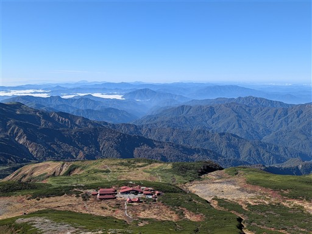
昨日に登った大日ヶ岳も良く見えている。
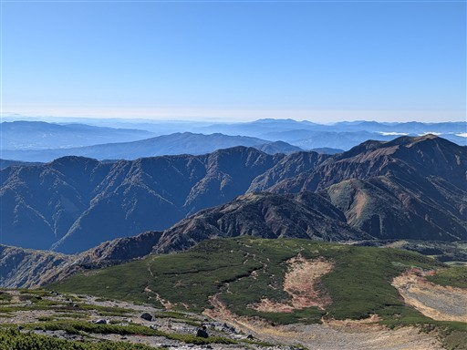
山頂はそれなりに賑わっているが、混雑はしていない。
腰を下ろして景色を眺めながら食事をとる。
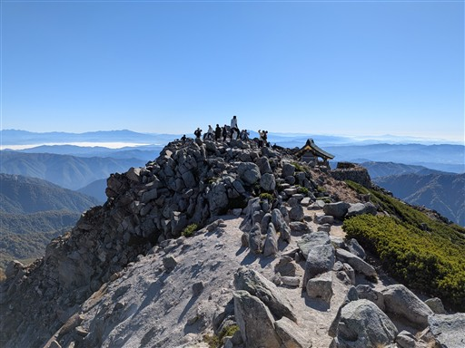
ここからお池めぐり。山頂部をぐるっと一周する。
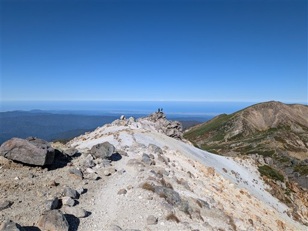
御前峰から窪地に下りてくる。
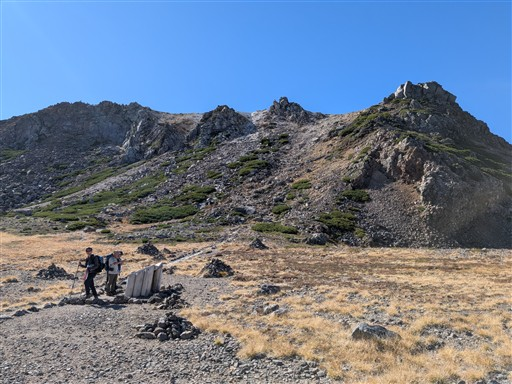
紺屋ヶ池。緑色の美しい池だ。
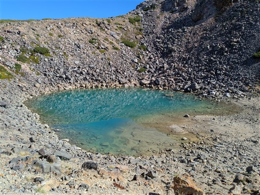
岩の間をすり抜ける。
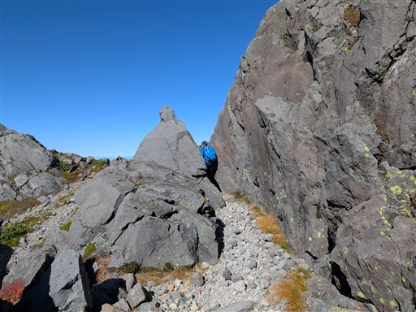
次に見えてきたのが翠ヶ池。
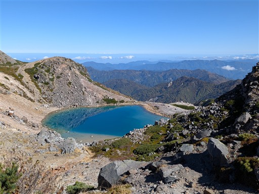
池を見ながらのダイナミックな登山道。
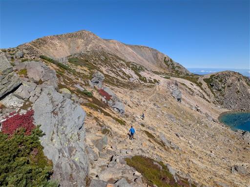
翠ヶ池。驚くほどきれいな青色だ。
こんなきれいな池はなかなか見かけない。背景が北アというのも良い。
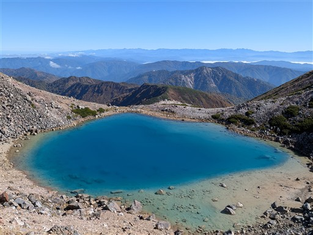
クラックが入っていてボルダリングできそうな岩。
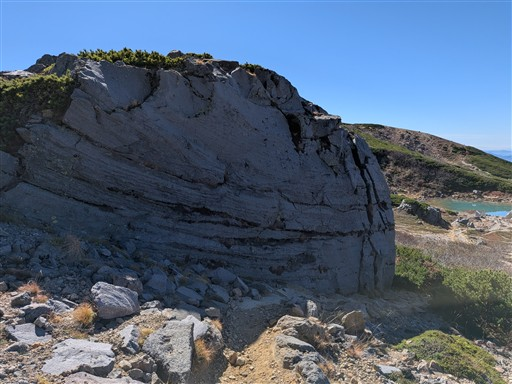
血の池。別に血の色はしていない普通の池だ。
分岐点。ここでお池めぐりから外れて大汝峰を目指す。
目の前に聳える大汝峰。100mほどの登りだ。
シラタマノキ。
本日ほぼ最後の登り。
絶景が広がる道を歩く。
大汝峰に到着。標高2684m。御前峰より18m低い。
こちらの山頂にも神社がある。気象条件が厳しいのか、がっちりとした石垣に守られている。
山頂は御前峰と違って広大。360度の展望が広がるが、ウロウロしないとあまり展望が見渡せない。
御前峰からの景色とよく似ているが、こちらは大汝峰からの御前峰の姿。
こちらの山頂からは翠ヶ池の景色が見えるのが良い。
広い山頂と遠くの山々。
北アルプス。手前の斜面が崩落している山は奥三方岳。
山頂に建つ小屋。何かと思ったら本当の避難小屋のようで
「緊急避難以外立入禁止」と書かれている。
下山は元来た道を帰ろうと思っていたが、傾斜の緩いぐるっと回り込む道を歩く。
花のように点々と枯れ草が生えている。
眼下に見えてきたのは四塚山。ここまで来ないと見えてこない景色がまだあった。
なかなか特徴的な山容。あの山を越える加賀禅定道が見えており、長いが歩いてみたい道だ。
この辺りのハイマツは結構立っている。
でも、綺麗に刈り払いされていて歩きやすい。
コケモモの実が大量にできている。
斜面に付けられた緩やかなトラバース道をぐるっと歩く。
手前に特徴的な形の尾根が見えている。白山釈迦岳を通る尾根だ。
残念ながらこの尾根道は閉鎖されていて、復旧の可能性は低そうだ。
イワギキョウの花が咲いている。
小さな池が見える。五色池かな？
チングルマの綿毛。もう綿毛も終わりかけだ。
千蛇ヶ池。驚いたことにまだ残雪に覆われている。万年雪なのだろう。
お池めぐりコースから外れて室堂に至る近道コースを歩いていく。
標識に書かれている近道という表現があまり好きではないが、ぐるっと回ってももう池は無いので。
マイヅルソウの実。宝石のように美しい赤色だ。
紅葉広がる緩やかな道を下る。
下を見ても鮮やかな紅葉。
上を見ても鮮やかな紅葉。
室堂からのメインコースと合流。
室堂に建つ白山神社。扉は閉まっている。
さすがにこの時間になると賑わっている。それでも思ったほど混雑はしていない。
とにかく巨大な宿泊施設。なんと750名が泊まれるらしい。
こちらは別当出合へ向かうメインロード。次々と人が下山していく。
我々は喧騒から離れて、再び静かな道に入って行く。
朝の光の紅葉も良いが、昼の光の紅葉もより鮮やかに見えて良い。
目立つピークは奥三方岳。登りたくなるような山容だが登山道は奥の三方崩山までしかない。
しばらくは展望バツグンの尾根道だ。
谷が非常に深い。
朝も眺めたこの景色。偶然にも朝に撮った写真とピッタリ同じ画角で撮れている。
ここも朝に見た景色。紅葉の色の出方が違っていて興味深い。
眼下に広がる斜面。色とりどりの素晴らしい紅葉。
近くで見たらこのような感じ。遠くの景色も近くの景色も素晴らしい。
大倉山避難小屋に戻ってくる。
小屋近くの見晴らしの良い場所でおやつ休憩をとる。
白山を仰ぎ見る。おやつを食べたら出発。
眼下に白水湖が見えてきた。
ここも登りの時に見た景色。注目する場所はやはり同じ。
これで白山は見納め。さようなら、白山。
色鮮やかな樹林帯の中に入って行く。
この辺りは朝はまだ暗かった場所。
鮮やかなグラデーションのハウチワカエデ。
登山口の東屋まで下りてくる。
地面に綿毛が大量に落ちている。
駐車場に無事戻ってくる。
白山は展望も紅葉も池も、何もかもが素晴らしい山だった。
さすがは日本を代表する名峰だ。混雑もうまく避けられ、とても快適な登山だった。
白水滝に行きたくて周囲をすこし散策。
白水の森というものがあり、入ってみるが何もない場所だった。
白水湖を見学。
湯気が出ている。地図を見ると温泉マークが書かれている。
後で分かったことだが、大白川温泉の源泉はここで、ここからお湯を引いているようだ。
車で帰る途中で白水滝の標識を発見。見に行くことにする。
分岐が分かりにくい道を下ること数分、展望台に到着する。
ちょっと遠い。しかも逆光。
でも素晴らしい滝だ。落差、水量とも十分。
滝自体は華厳滝に匹敵する素晴らしい滝だと思う。
サルを発見。そこまで人慣れしていないのか、みんな割と逃げていく。
本日は大白川温泉しらみずの湯に入る。先ほど見えた湯気から引いた温泉だ。
施設内にあった白山周辺の立体地図。周辺の登山道や地形がよく分かる。
温泉の食事処の閉店が思ったよりも早かったので、白川郷に移動して夕飯をとる。
さすがは人気の観光地。店を出たら多くの外国人が並んでいた。